Rendered application captures with isolated synthetic records. Select any image to open the full capture.
With Statistics set to the same 267 px allocation, both first timing rows measure 53.84 px. The default Training rail gives up 9 px of Statistics height to the larger Training Setup panel.
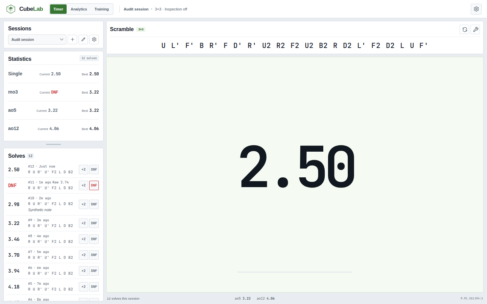
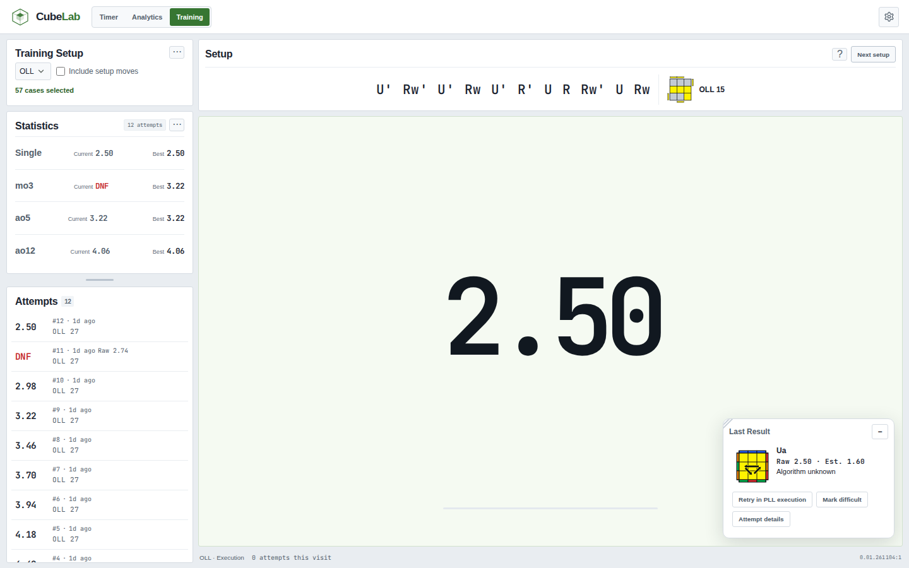
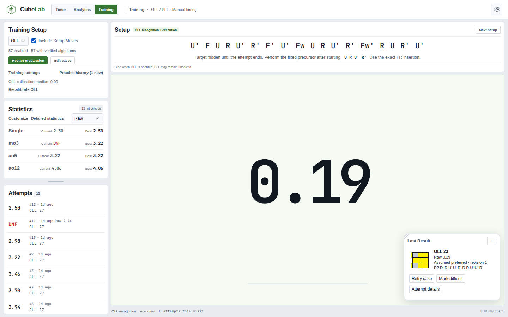
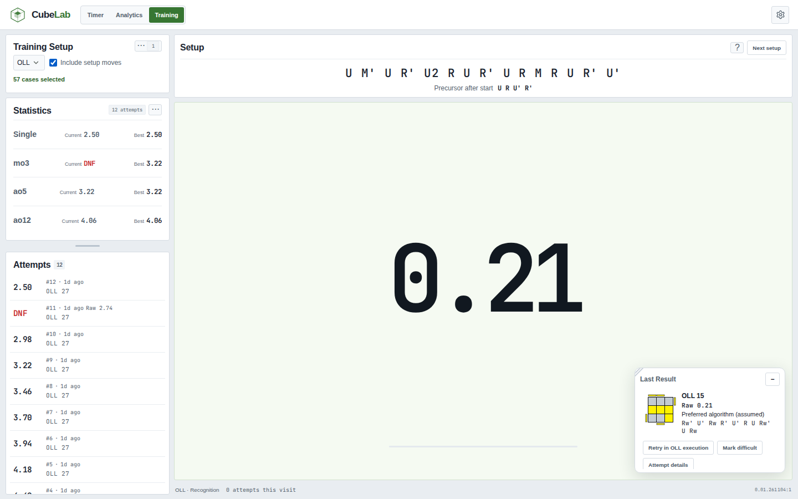
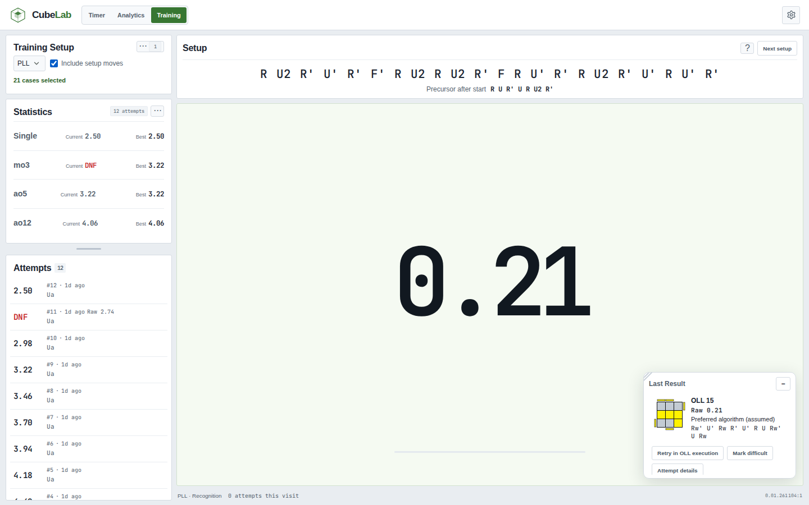
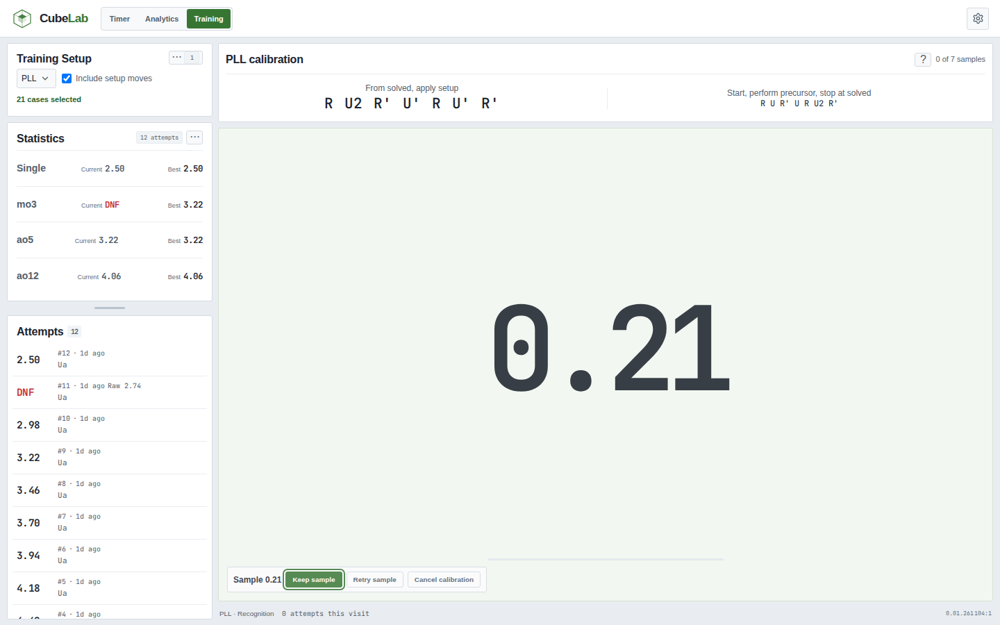
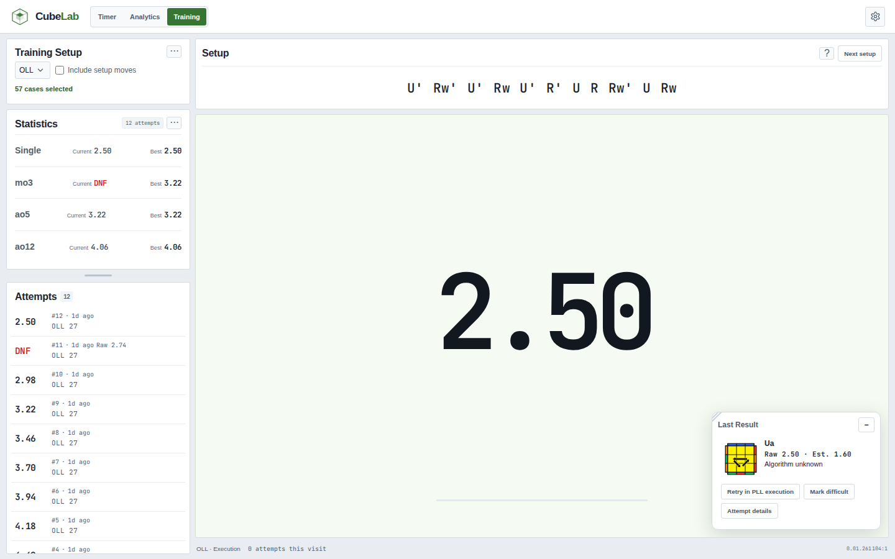
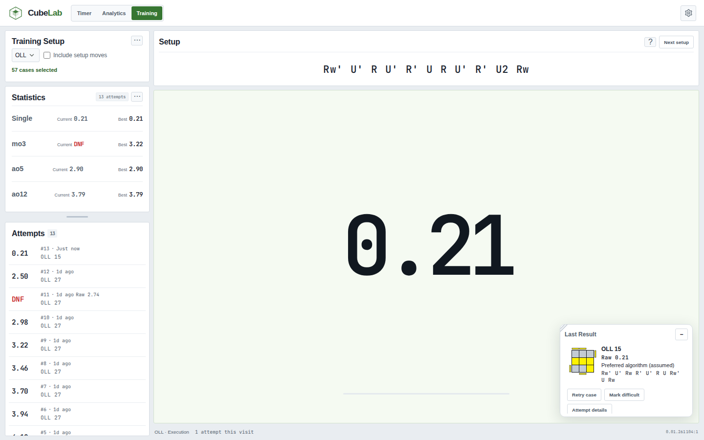
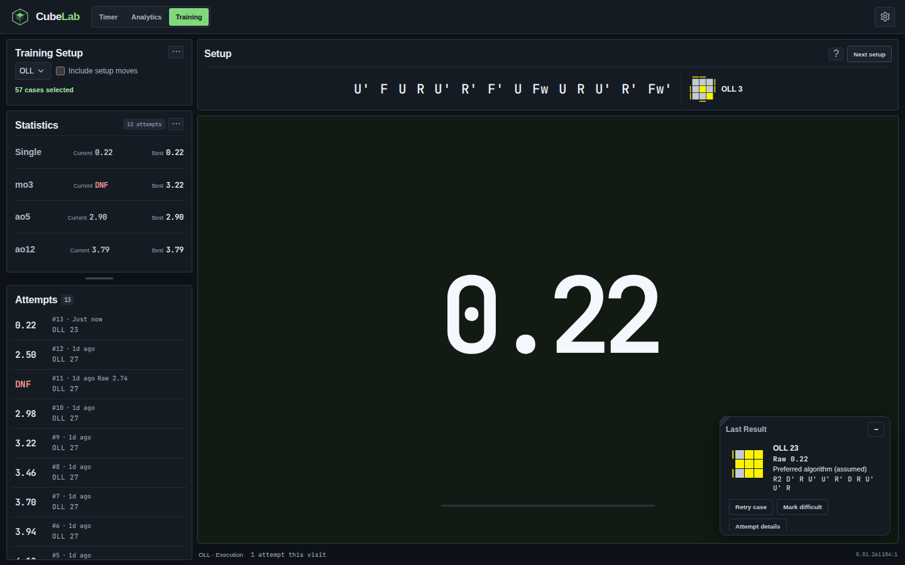
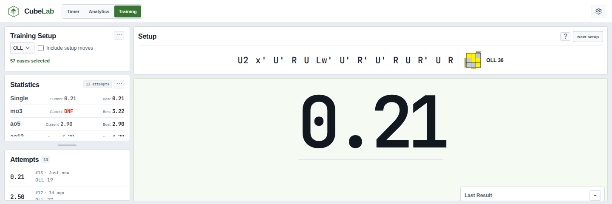
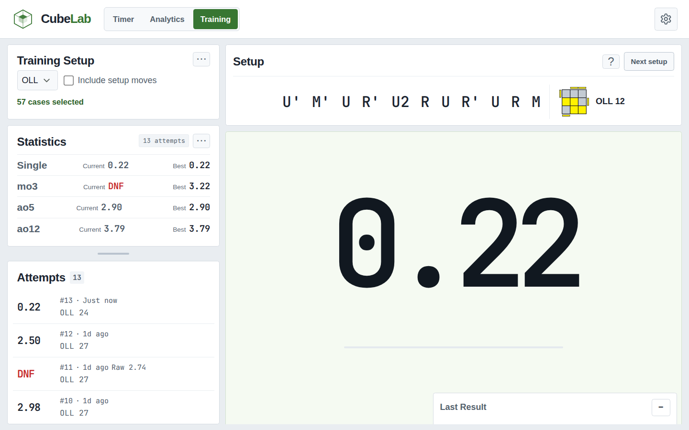
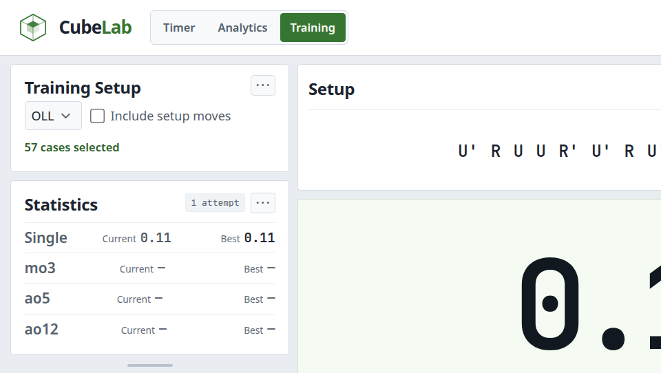
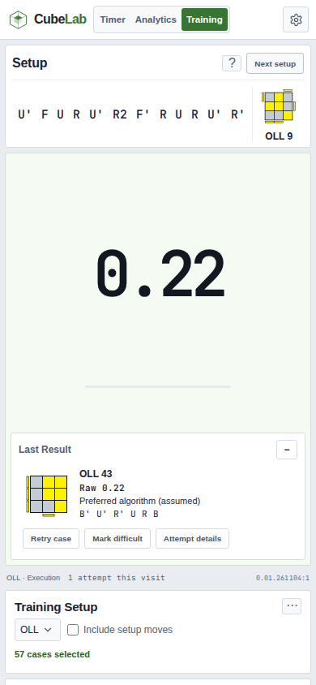
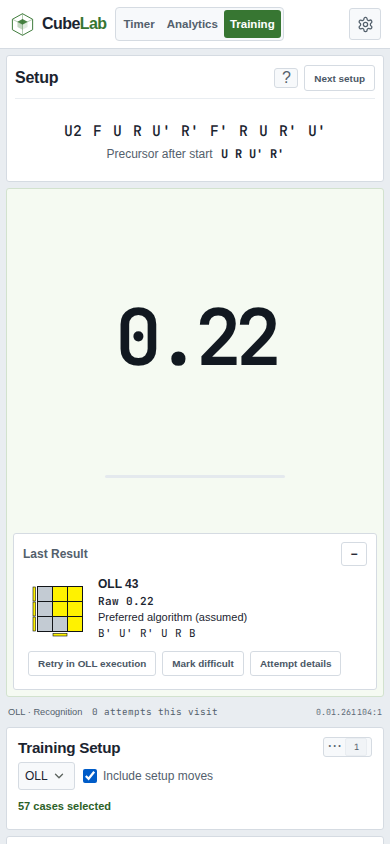
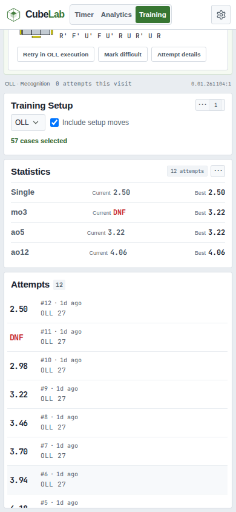
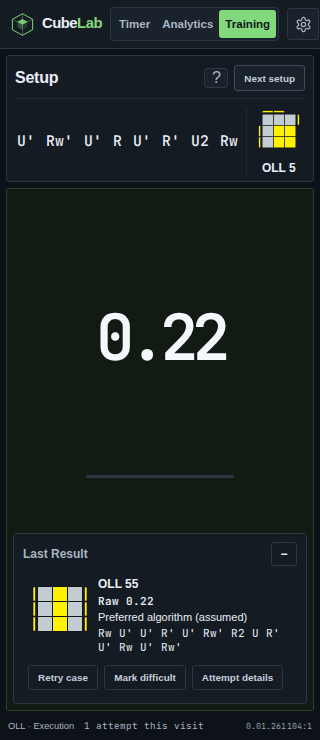
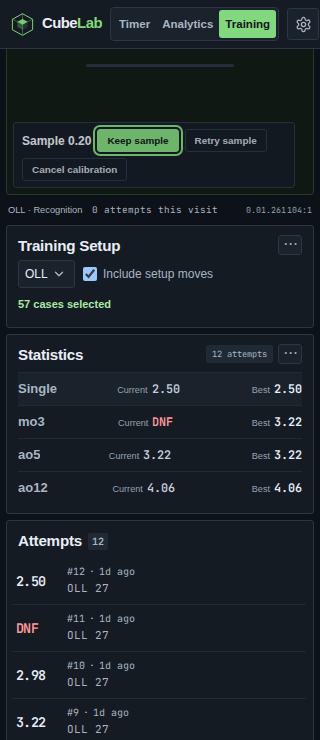
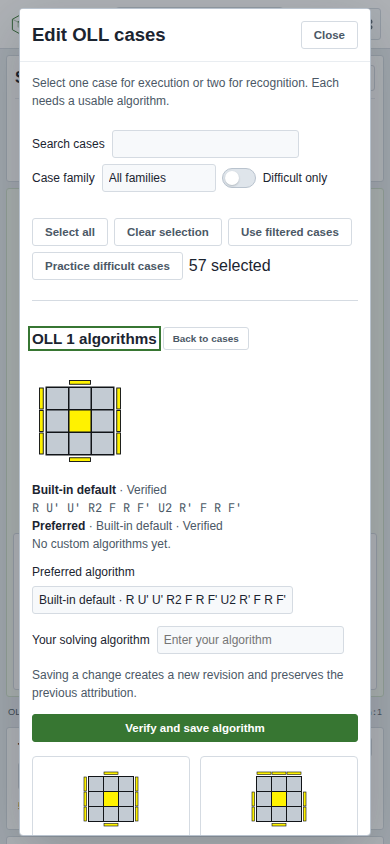
 BeforeImplemented
BeforeImplemented BeforeImplemented
BeforeImplemented